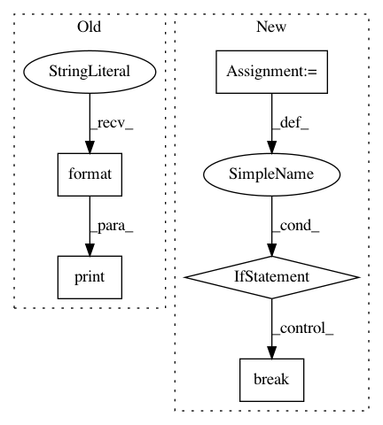

2733bef356c53286d475a67476d88d4840923830,code/deep/finetune_AlexNet_ResNet/finetune_office31.py,,finetune,#,87
Before Change
for epoch in range(1, N_EPOCH + 1):
// lr_schedule(optimizer, epoch)
print("Learning rate: {:.8f}".format(optimizer.param_groups[0]["lr"]))
print("Learning rate: {:.8f}".format(optimizer.param_groups[-1]["lr"]))
for phase in ["src", "val", "tar"]:
if phase == "src":
model.train()
else:
After Change
criterion = nn.CrossEntropyLoss()
stop = 0
for epoch in range(1, args.n_epoch + 1):
stop += 1
// You can uncomment this line for scheduling learning rate
// lr_schedule(optimizer, epoch)
for phase in ["src", "val", "tar"]:
if phase == "src":
model.train()
else:
model.eval()
total_loss, correct = 0, 0
for inputs, labels in dataloaders[phase]:
inputs, labels = inputs.to(DEVICE), labels.to(DEVICE)
optimizer.zero_grad()
with torch.set_grad_enabled(phase == "src"):
outputs = model(inputs)
loss = criterion(outputs, labels)
preds = torch.max(outputs, 1)[1]
if phase == "src":
loss.backward()
optimizer.step()
total_loss += loss.item() * inputs.size(0)
correct += torch.sum(preds == labels.data)
epoch_loss = total_loss / len(dataloaders[phase].dataset)
epoch_acc = correct.double() / len(dataloaders[phase].dataset)
print("Epoch: [{:02d}/{:02d}]---{}, loss: {:.6f}, acc: {:.4f}".format(epoch, args.n_epoch, phase, epoch_loss,
epoch_acc))
if phase == "val" and epoch_acc > best_acc:
stop = 0
best_acc = epoch_acc
torch.save(model.state_dict(), "model.pkl")
if stop >= args.early_stop:
break
print()
model.load_state_dict(torch.load("model.pkl"))
acc_test = test(model, dataloaders["tar"])
time_pass = time.time() - since
In pattern: SUPERPATTERN
Frequency: 3
Non-data size: 5
Instances
Project Name: jindongwang/transferlearning
Commit Name: 2733bef356c53286d475a67476d88d4840923830
Time: 2020-09-30
Author: jindongwang@outlook.com
File Name: code/deep/finetune_AlexNet_ResNet/finetune_office31.py
Class Name:
Method Name: finetune
Project Name: scikit-learn/scikit-learn
Commit Name: fc06baef499b8e0a6d677d4a19fa983f173ad06c
Time: 2020-07-28
Author: 34657725+jeremiedbb@users.noreply.github.com
File Name: sklearn/cluster/_kmeans.py
Class Name:
Method Name: _kmeans_single_lloyd
Project Name: pymanopt/pymanopt
Commit Name: 70e1e9c9d0cda4c66e7f877e2d9e23dc3da236e8
Time: 2016-02-23
Author: git@sweichwald.de
File Name: pymanopt/solvers/trust_regions.py
Class Name: TrustRegions
Method Name: solve